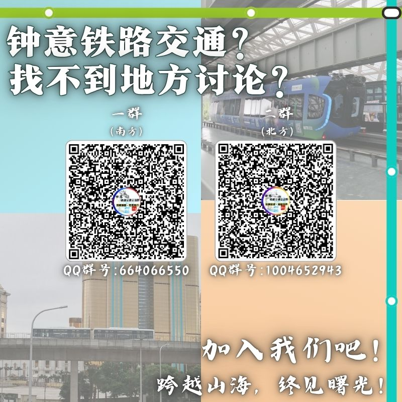

GROUP / 01华中 · 华南
世界轨道交通交流一群㍿
面向华中与华南区域的轨道交通交流。
QQ群号664066550
PERSONAL PORTFOLIO 2026
你好，我是嶺南東道。
轨道交通观察者 · 视频与图文创作者在地图与城市之间，记录轨道交通的变化，也记录每一次出发的意义。这里收录我的内容创作、专题观察与沿途笔记。
交通强国，世界先行。安全优质，兴路强国。立足南粤，纵横华夏。放眼全球，连结世界。新年华章，逐梦起航！跨越山海，终见曙光！
「嶺南東道」取意于唐代的岭南东道。以此为名，是希望立足南粤，记录这里城市轨道交通的发展与变迁，也将目光投向更广阔的天地。
从线路规划到工程进展，从车站建设到换乘信息，这里关注轨道交通的每一步延伸，也尝试以文字、影像与线路图为媒，将专业的交通知识化作更直观、更有趣的分享，让更多人认识轨道、了解城市，发现日常出行背后的脉络与故事。
轨道不止是地图上的线条。
它连接车站与城市，串联通勤与生活；它承载产业的流动，见证城市的生长，也将原本遥远的地方带到彼此身旁。每一次线路延伸、每一座车站启用，都在悄然改变城市的空间与人们的生活。
立足南粤，纵横华夏；放眼全球，连结世界。
愿以热爱为笔，以轨道为线，记录山海之间的每一次抵达，见证城市发展的每一程新篇。让轨道延伸之处，皆有故事；让交通连接之地，终成远方。
集中收录主页、动态、视频、专栏/图文与收藏夹入口。
UPDATE 当前环境无法稳定读取 B 站页面的动态内容，因此这里先接入你提供的五个官方入口，不虚构投稿标题、播放量或更新时间。后续你可以提供具体作品链接或截图，我再把真实作品整理成可筛选的作品卡片。
重点整理粤港澳与广东铁路相关运营方。照片和线路图优先引用维基共享资源；每张图均有来源页，官方线网图入口用于核对最新版本。浏览器无法访问外链图片时，会显示本地示意图并保留来源链接。
IMAGE & MAP SOURCES 维基共享资源图片按各自文件页标注的作者与许可证使用；部分线路图可能是社区制作的示意图，不能替代运营方最新官方线网图。
按地区整理常用官方入口，点击卡片即可打开运营商网站。
国铁、城际铁路与主要城市轨道交通运营方。链接指向运营方或官方服务平台。
香港主要铁路及轨道交通运营方。
澳门目前主要的城市轨道交通运营方。
收录台铁、高铁与主要城市捷运系统。
日本铁路运营方数量众多；此处收录 JR 集团、主要都市地铁及大型私铁，后续可继续扩充。
LINK NOTE 本页面提供的是官方站点快捷入口，外部网站由各运营方独立维护。日本铁路公司数量众多，本目录为常用运营方精选，并非所有地方铁路与第三部门铁路的完整清单；如有链接调整，可后续继续补充更新。
扫码加入 QQ 群，和不同地区的轨道交通爱好者交流。

查看宣传图 ↗面向华中与华南区域的轨道交通交流。
面向东北、华北与华东区域的轨道交通交流。
SCAN 请使用 QQ 扫描对应二维码加入群聊；二维码失效时，可复制群号后在 QQ 中搜索加入。
从一条线、一座站开始，拆解轨道交通与城市生活。
SOURCE 已发布视频的标题、BV 号、日期与简介依据可公开检索到的 B 站索引结果整理。B 站个人投稿列表当前无法由本环境稳定抓取，故尚未取得官方封面图片；此卡片使用站内主题图作为临时展示封面，不冒充原始封面。其余三张为策划方向示意卡片。
线路、节点、换乘与导视的视觉探索。点击作品可查看大图。
多线路色彩、换乘节点与图例层级的视觉研究。
概念示意 · 非官方线路图以接驳为中心，梳理轻量化轨道的空间联系。
概念示意 · 非运营线路用线条层级与节点强调，让换乘结构更加直观。
概念示意 · 虚构线路探索线路名称、中英文标签与方向信息的排列方式。
概念示意 · 非实际站牌NOTE 前六项为你上传的原创线路图，卡片显示原文件名，可放大查看或下载原 PNG。远期线路图属于个人创作与构想，不等同于官方批准或运营线网；后四项为早期概念示意。实际出行请以运营方官方地图为准。
从一条线路出发，继续追问城市如何生长。
线路新讯息、车站变化、换乘关系，以及一张线网图背后的城市逻辑。
前往主页浏览 ↗轻量化交通如何融入城市？从客流、路权到接驳，讨论系统的现实处境。
前往主页浏览 ↗从车站走入街巷，记录地方风物、城市肌理，以及旅途中短暂却具体的瞬间。
前往主页浏览 ↗专题卡片为内容方向展示，具体作品请以 B 站主页实际发布内容为准。
尽量厘清线路、站点、进度与换乘信息，让每一次科普都有可靠的基础。
用线网关系和空间视角梳理复杂信息，让读者更快找到重点。
不只关注列车与工程，也关心交通如何影响生活、出行与城市连接。
(1).png){kind=link}


.png){kind=link}